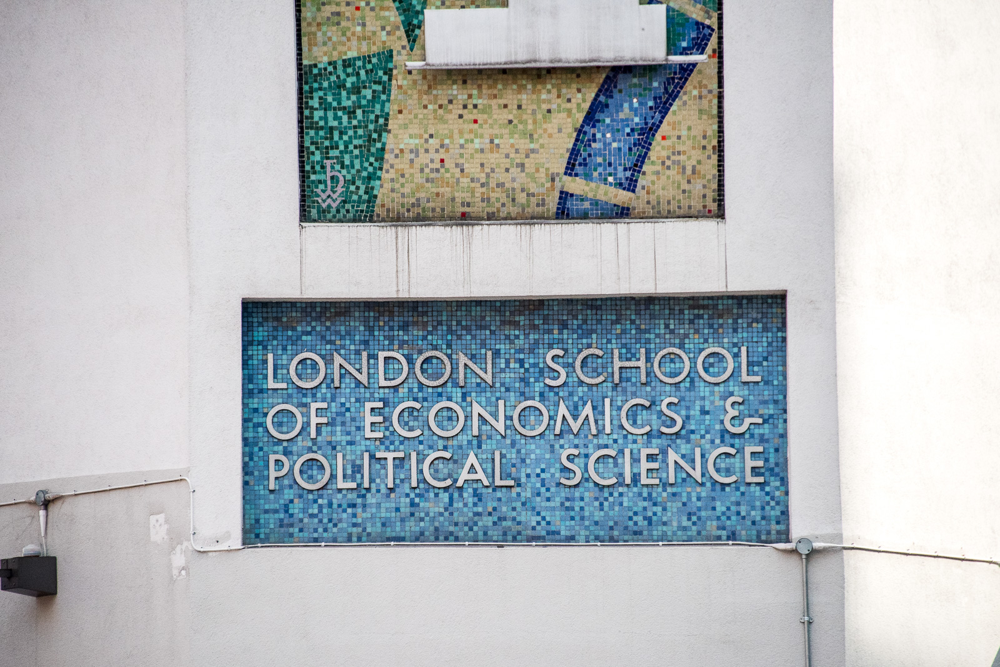
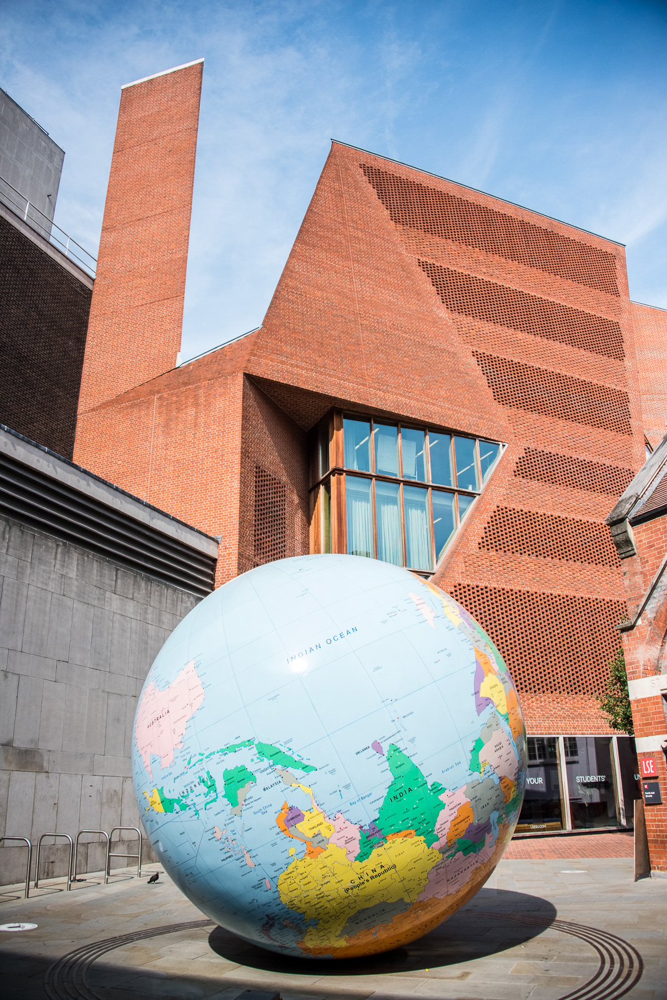
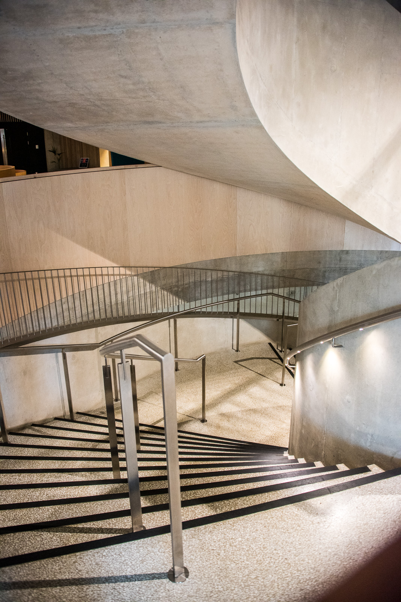
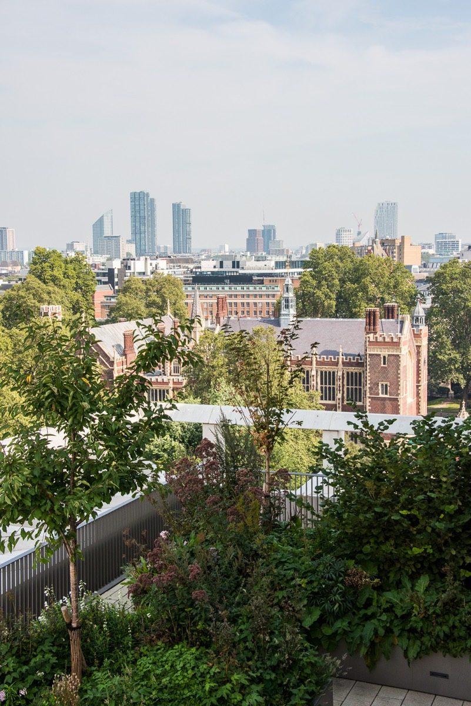
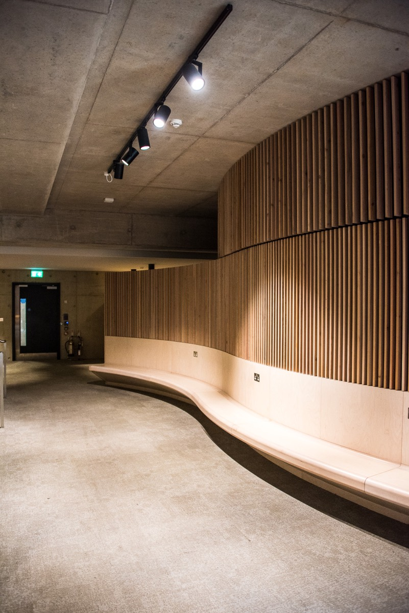

A Design Competition,
Grafton Architects & a Generous Donor
The Marshall Building at the London School of Economics sits on the corner of Portsmouth Street and Lincoln's Inn Fields, a few minutes from the Aldwych. It opened in 2022, replacing a 1970s cancer research building on the same site. The guide from LSE Estates leads a brisk, enthusiastic tour through all nine floors — he openly admits he likes talking, apologises for not stopping, and delivers one of the more technically informative Open House tours of the day.

The building came about through an RIBA international design competition. A brief was drawn up, published to the world, and whittled down to a shortlist of six practices. A jury panel selected the Dublin-based Grafton Architects — winners of the 2020 RIBA Gold Medal and known for their work on universities in Ireland, Peru and Italy. Their design was chosen and rolled forward into what now stands here.
The building is named after Stanley Marshall, who made a significant donation to LSE to enable the project to proceed. His office is on the ninth floor, with what the guide describes as pretty spectacular views — he notes with a straight face that you get what you're paying for.
The construction cost alone was £92 million. Total project cost, including VAT, furniture and project fees: £145 million. It is not, the guide says, a cheap building. But it is, he thinks, a pretty spectacular one.
The Great Hall:
Vaulted Basements & Structural Trees
The Great Hall is the public heart of the building — a large column-free plaza at ground level, with three entrances at different heights (the levels between Lincoln's Inn Fields, Portsmouth Street and Fortune Street are all different) and a deliberate slight camber in the floor to connect them without steps. If you drop something, the guide says, it will roll downhill. Last year's Open House tour used chairs with wheels; several made for the door. This year they have opted for chairs without.

Grafton based the design of the Great Hall on the vaulted basements of Lincoln's Inn itself — the Honourable Inn on the corner of Lincoln's Inn Fields, whose ornate undercroft in the old Gothic style gave them a reference point. The Marshall Building's Great Hall speaks the same structural language, but in a modern vocabulary.
The dominant elements are what the guide calls structural trees — branching concrete columns that start as large chunks at ground level and become progressively more slender as they rise through the building, transferring load outward and upward. During construction, as the cladding panels were added to these trees, the whole structure visibly moved as engineers gradually counterweighted everything to make the system work. The floor is terrazzo. The central helical staircase was cast in situ — look closely at the wall as you climb, and you can see the small tie-holes left when the formwork was stripped after the concrete set.
The Great Hall functions as public plaza, café, event space and — this week — student registration venue for thousands of incoming students. Projectors and retractable screens are hidden in the structure. The Pritzker Prize ceremony was held here; the guide mentions David Adjaye receiving the award on the first landing of the helical staircase, surrounded by elaborate floral arrangements. Wi-Fi points are concealed within the grey boxing for the uplights — invisible unless you know to look.
Teaching Philosophy:
Why LSE Chose Small Over Giant
Levels one and two contain social study space and teaching rooms. The approach to study space is comprehensive — banquette seating built into the walls of the lecture theatre cores (with power for laptops), booths for group work, individual desks, cluster seating. Every available surface has been considered. The palette throughout is natural timber, soft neutral floors and muted fixed furniture, creating what the guide describes as a light, quiet environment both acoustically and visually.
A significant strategic decision shaped the teaching floors: Marshall has no large lecture theatres. No tiered halls of 500. No banks of seats stretching back into the dark. This was deliberate.
LSE worked extensively through its stakeholder engagement process — with departments, with lecturers, with students, and with an internal team called EDEN specifically set up to research best practice in teaching. The conclusion: both staff and students strongly prefer intimate teaching spaces. Lecturers can move among their students, make eye contact, read the room. Students feel more engaged in smaller classes. The large strategic lecture theatres exist elsewhere at LSE for occasions where they are needed; Marshall deliberately does not have them.
Every teaching room has at least one window with natural light — a requirement rather than a preference. The guide explains that having a visual reference to the outside world, to the time of day, is simply part of being human. The rooms facing Lincoln's Inn Fields have particularly good views of the green, and the guide is not wrong that it helps.
A small detail the guide particularly likes: the writing surfaces on the lecture theatre furniture have small rubber pencil stops fitted so that pens and pencils don't roll off. Often overlooked. Actually quite important.
On the question of smart boards versus traditional whiteboards: the engagement process produced an unambiguous answer. Lecturers in engineering and mathematics especially were emphatic — they wanted traditional boards for writing equations, not moving parts with opportunities for things to go wrong. Every teaching room has whiteboards. There are also supplementary screens for hybrid and recorded learning — a legacy of the pandemic that has been retained — but the whiteboard remains primary.
The Terrace: Views, Costs
& the Seagull Problem
The ninth floor houses the Marshall Institute and gives onto a roof terrace with views across Lincoln's Inn Fields, the City and — on a clear day — considerably further. The guide draws attention to something Grafton got right at height: rather than a sheer drop at the building edge, the terrace is designed in layers, with a setback arrangement that means despite being clearly very high up, you don't get that vertiginous sense of standing at a cliff edge. It reads as safe. People are comfortable on it.

There is a bird scarer around the building. This requires explanation. Seagulls, it turns out, have a mating behaviour involving objects dropped into water — the larger the splash, the more impressive the display. On a clear day, a section of plate glass ceiling in the neighbouring Centre Building (designed by Rogers RSHP) looks, from above, remarkably like water. Seagulls pick up objects from the roof and drop them onto it.
Each panel costs £70,000 to replace. Hence the bird scarer. The problem is technically the Centre Building's, not Marshall's, but the birds are coming from the roof. The guide mentions this with the tone of a man who has had to explain it many times and still finds it slightly absurd.
The building has a meaningful biodiversity programme regardless: planted roofs, a bee colony producing small batches of LSE honey, and the bird scarer, which is doing its best.
The Problem with a Building
That Is Too Quiet
The Marshall Building's mechanical plant has been designed to run almost silently. Walk through it and what you notice, beneath the ordinary sounds of people and activity, is essentially nothing. No background hum from ventilation, no faint mechanical drone. It is, for a building of this size in central London, remarkably peaceful.

"It has had an alternative effect, which you wouldn't think of. You can hear more than you would normally expect to between offices. It's almost too quiet."
— LSE Estates Guide
Standard office acoustic design assumes a certain level of background noise — from plant, from equipment, from people — and internal partition walls are specified to a decibel rating calibrated against that assumption. Remove the background noise, and suddenly those walls are not performing as expected. Sound that would have been masked by ambient hum becomes audible. The building is, acoustically, more transparent between rooms than the design anticipated.
The lesson: a degree of background noise is part of how we experience acoustic privacy. Silence is not always an improvement. Something to learn, the guide says, with the slightly rueful cheerfulness of someone who has thought about this more than he expected to.
The Basement: A Sports Hall
LSE Never Had Before
Below the public levels of the building, managed by the LSE Students' Union rather than the university estates team, is a suite of facilities that LSE had never previously been able to offer on campus. For a central London university on a constrained site, the Marshall Building's double basement — which was possible because the former cancer research building on this site already had a double basement of labs, avoiding the cost and disruption of excavating afresh — has been transformative.
A full-size Sport England standard sports hall, used for basketball, indoor netball and badminton. Before Marshall, LSE students had to travel off campus for any indoor sport. A suite of fully acoustically treated music rooms — one with a small grand piano and a drum kit — from which, the guide confirms, you cannot hear a thing from outside. A weight studio with protected flooring. Two squash courts.
The squash courts have a small design detail the guide always mentions on tours: balls accumulate on the windowsill and on top of a lip detail in the wall, where they cannot easily be retrieved. Whether this represents a design oversight or an ongoing contribution to the university's traditions of student mischief, the guide declines to say definitively. Both possibilities are, he suggests, consistent with what he knows of LSE students.
The Students' Union also controls an entire separate building nearby — the existing SU building, with two cafes, a pub, a radio station, breakout study space and more balconies. Between the two buildings, the student facilities available at a university that occupies one of the most expensive and constrained urban campuses in Britain have expanded significantly.
What Comes Next:
35 Lincoln's Inn Fields
The red brick building visible from the Marshall Building terrace, just past the Royal College of Surgeons, is 35 Lincoln's Inn Fields. LSE owns it. It will be redeveloped within the next three to four years, following a design competition that attracted huge international interest. David Chipperfield Architects won that competition — making Chipperfield the designer of what will become the next major set piece on the LSE campus, following Grafton's Marshall Building.

The guide mentions this with visible excitement, and invites the group back in a few years to see it.